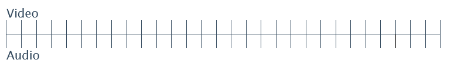
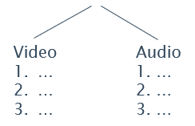
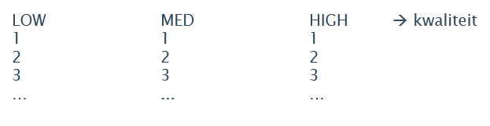

Stel je voor: je wilt een video online bekijken (MP4) --> dit duurt veel te lang om in z'n geheel te downloaden.
Om de downloadtijd te verkorten, wordt deze opgedeeld in verschillende kleine stukjes:
eerst worden video en audio opgesplitst.
Voorstelling splitsing:

Wat doet THEOplayer (=naam hoofdproduct)
Daarna worden alle video- en audiostukjes ook nog eens ‘gekapt’ en krijgt elk gekapt deel een specifieke naam.
= packager (--> file met beschrijving in verschillende standaarden, nl. DASH en HLN
Wat doet THEOplayer verder?
THEO gaat deze video files nóg een keer opsplitsen, in segmenten naar kwaliteit:

Wanneer het netwerk slecht is, zal de player automatisch naar een minder goede kwaliteit overschakelen zodat de video nog steeds (snel genoeg) kan afgespeeld worden.
Hoe THEOplayer gebruikt kan worden?
SDK= Software Development Kit
Toegevoegde waarde THEOplayer
- Advertiser: THEO heeft dit toegevoegd aan de SDK, zodat de klant zelf precies kan kiezen wanneer welke reclame.
- Analytics: THEO zorgt ervoor dat de klant kan zien wat hun klanten doen met de getoonde advertenties (bv. hoe vaak bekeken, op geklikt, enz.)
Commercial (Sales, SDR, Marketing, CSM)
Costumer Succes (Project Management, Solution Architects, CSM, Product)
Engeneering (Playback, Features & Interegation, Technical Support, Test Automation, Fullstack/Portal, Innovations)
Supporting (HR, Management, Finance, Office)